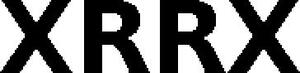

Trade Mark Journal No.2025/040 3 October 2025
WO0000001867291 (9,35,37,40,42,44)
Office of origin: European Union Intellectual Property Office (EUIPO)
Date of International Registration:28 February 2025
Date of designation in the UK:
28 February 2025

International priority date claimed: 2 September 2024
(European Union Intellectual Property Office (EUIPO))
(019073586)
- Class 9
- Optical lenses; correcting lenses [optics]; spectacle lenses; replacement lenses for glasses; optical devices, enhancers and correctors; prisms for optics purposes; 3D glasses; optical glasses; prescription glasses; smart glasses; virtual, augmented and extended reality glasses and headsets; frames for glasses and spectacles; virtual, augmented and extended reality components and software for optical lenses and virtual, augmented and extended reality glasses; audiovisual headsets; information technology and audio-visual, multimedia and photographic devices; testing apparatus for checking optical devices; optical apparatus and instruments; optical measurement apparatus; software; computers; hardware; computer peripherals, and wearable electronic devices; bags, covers, cases, sleeves, straps, lanyards and holders for computers, computer peripherals and headsets.
- Class 35
- Wholesale, retail and online retail sales and services regarding optical lenses, correcting lenses [optics], spectacle lenses, replacement lenses for glasses, optical devices, enhancers and correctors, prisms for optics purposes, 3D glasses, optical glasses, prescription glasses, smart glasses, virtual, augmented and extended reality glasses and headsets, frames for glasses and spectacles, virtual, augmented and extended reality components and software for optical lenses and virtual, augmented and extended reality glasses, audiovisual headsets, information technology and audio-visual, multimedia and photographic devices, testing apparatus for checking optical devices, protective coating for optical lenses, optical apparatus and instruments, optical measurement apparatus, software, computers, hardware, computer peripherals, and wearable electronic devices, bags, covers, cases, sleeves, straps, lanyards and holders for computers, computer peripherals, and headsets; sales promotion for others; business intermediary services for the sale and purchase of optical lenses, correcting lenses [optics], spectacle lenses, optical devices, enhancers and correctors, prisms for optics purposes, 3D glasses, optical glasses, prescription glasses, smart glasses, virtual, augmented and extended reality glasses and headsets, frames for glasses and spectacles, virtual, augmented and extended reality components and software for optical lenses and virtual, augmented and extended reality glasses, audiovisual headsets, information technology and audio-visual, multimedia and photographic devices, testing apparatus for checking optical devices, protective coating for optical lenses, optical apparatus and instruments, optical measurement apparatus, software, computers, hardware, computer peripherals, and wearable electronic devices, bags, covers, cases, sleeves, straps, lanyards and holders for computers, computer peripherals and headsets.
- Class 37
- Repair and maintenance of optical lenses, correcting lenses [optics], spectacle lenses, optical devices, enhancers and correctors, prisms for optics purposes, 3D glasses, optical glasses, prescription glasses, smart glasses, virtual, augmented and extended reality glasses and headsets, frames for glasses and spectacles, virtual, augmented and extended reality components and software for optical lenses and virtual, augmented and extended reality glasses, audiovisual headsets, information technology and audio-visual, multimedia and photographic devices, testing apparatus for checking optical devices, protective coating for optical lenses, optical apparatus and instruments, optical measurement apparatus, software, computers, hardware, computer peripherals.
- Class 40
- Custom manufacture of optical, correcting and replacement lenses and spectacles; processing of optical lenses and spectacles to meet individual requirements; manufacturing of lenses of thirds parties; development of customized optics platforms; grinding of optical glass.
- Class 42
- IT services; science and technology services; testing, authentication and quality control; design services; design and development of optical components, design and development of virtual, augmented and extended reality components and software for optical lenses.
- Class 44
- Fitting of optical lenses and spectacles (term considered too vague by the International Bureau pursuant to Rule 13 (2) (b) of the Regulations); information services relating to optical lenses and spectacles; optical tests; opticians' services; sight-testing [opticians'] services; opticians' services provided online from a computer network.
tooz technologies GmbH
Representative: Holger Gensmantel, Carl-Zeiss-Str. 22, 73447 Oberkochen, GERMANY